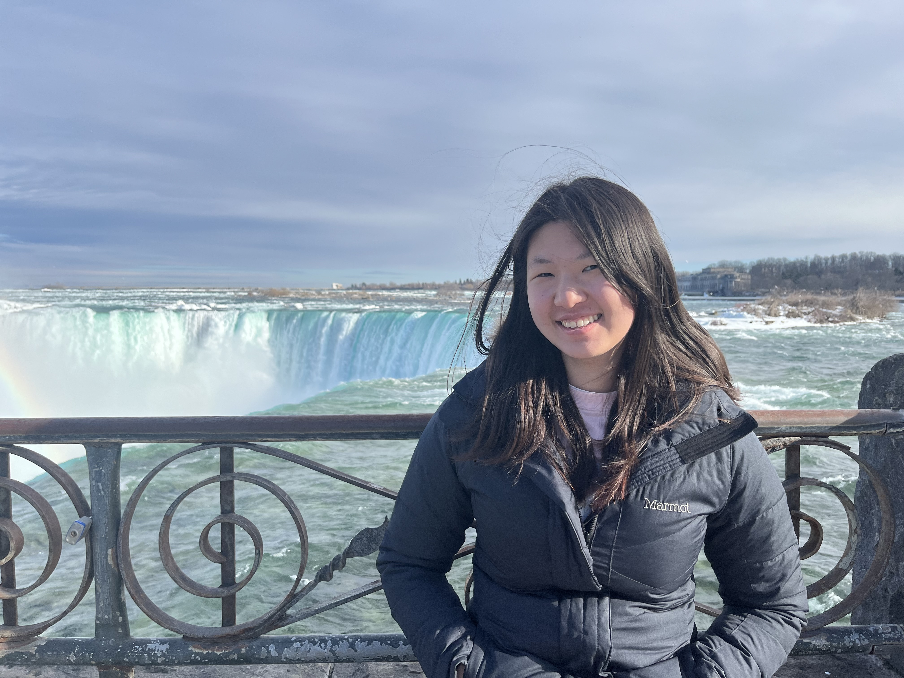

Hello! I'm Cecilia. I'm a sophomore at Yale, originally from the suburbs of Seattle, pursuing a B.S./M.S. in mathematics & a B.A. in humanities.
Previously, I was a camper at MathILy (2021), Canada/USA Mathcamp (2022, 2023), a participant at the Texas State Math REU (2024), and at SUMRY (2025).
I also play the carillon (tower bells) as part of the Yale Guild of Carillonneurs, as well as being a knitter, potter, and writer. I love coffee.